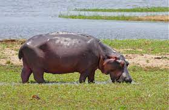

Állatkertünk felújítása befejeződött!
Állatkerti állományunk bővűlt!
Peti a viziló nem rég került be vaonatuj állatkertünkbe továbbá csatlakozot hozzá mango a maki és foltos hiúz.

Hasznos infok a vizilóvakról:
- A nílusi víziló (Hippopotamus amphibius) az emlősök (Mammalia) osztályának párosujjú patások (Artiodactyla) rendjébe, ezen belül a vízilófélék (Hippopotamidae) családjába tartozó faj.
- Nevük ellenére nem a lovak a legközelebbi rokonai, de nem is a disznófélék, bár sokáig a legtöbben így vélték, egyebek közt a bikák röfögésre emlékeztető hangja miatt.
- A DNS-ek összehasonlításából meglepetésre kiderült, hogy legközelebbi rokonaik a cetek (Cetacea); emiatt manapság a vízilovakat és a ceteket a Whippomorpha nevű alrendbe foglalják össze.
- Még meglepőbb azonban, hogy Ernst Haeckel 1866-ban kiadott törzsfája a vízilovakat a cetek közeli rokonaiként ábrázolja. Máig sem tudni, Häeckel hogyan jutott erre a (helyes) következtetésre.